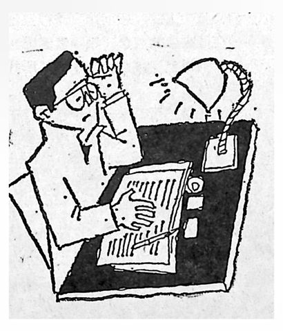
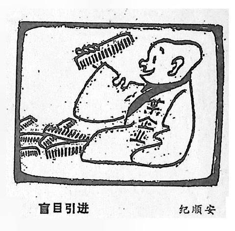
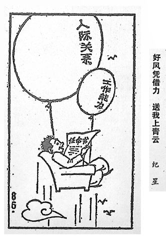

All items
《人事》1985年第1期（总第1期） Renshi (Personnel), 1985 no. 1 (whole no. 1)


《人事》1985年第2期（总第2期） Renshi (Personnel), 1985 no. 2 (whole no. 2)


《人事》1985年第3期（总第3期） Renshi (Personnel), 1985 no. 3 (whole no. 3)


![Untitled (“Recruiting” / “Backlog of talent”) — An old-fashioned bird trap, shown twice. Above, a basket labeled 某单位 (a certain unit) is propped up on a 招聘 (recruiting) sign tied to a pull-string. Nothing comes near it but a fly. Below, a sprung basket labeled 人才积压 (backlog of talent) is packed with trapped birds. Talent that one unit has caught cannot get out again, so nobody walks into the next trap. The right edge of the drawing is cut off in the scan. Unattributed. Renshi (Personnel), 1985 no. 3 (whole no. 3), p. 44.](../img/renshi-1985-03-s046-04_t.jpg)
《人事》1986年第1期（总第4期） Renshi (Personnel), 1986 no. 1 (whole no. 4)


《人事》1986年第2期（总第5期） Renshi (Personnel), 1986 no. 2 (whole no. 5)


《人事》1986年第3期（总第6期） Renshi (Personnel), 1986 no. 3 (whole no. 6)


《人事》1986年第4期（总第7期） Renshi (Personnel), 1986 no. 4 (whole no. 7)


《人事》1986年第5期（总第8期） Renshi (Personnel), 1986 no. 5 (whole no. 8)


《人事》1986年第6期（总第9期） Renshi (Personnel), 1986 no. 6 (whole no. 9)


《人事》1986年第7期（总第10期） Renshi (Personnel), 1986 no. 7 (whole no. 10)


《人事》1986年第8期（总第11期） Renshi (Personnel), 1986 no. 8 (whole no. 11)


《人事》1986年第11期（总第14期） Renshi (Personnel), 1986 no. 11 (whole no. 14)


《人事》1986年第12期（总第15期） Renshi (Personnel), 1986 no. 12 (whole no. 15)


《人事》1987年第1期（总第16期） Renshi (Personnel), 1987 no. 1 (whole no. 16)


《人事》1987年第2期（总第17期） Renshi (Personnel), 1987 no. 2 (whole no. 17)
-
 名人铺路
名人铺路
Li Guozhong, Wang Bianxiang · inside front cover -
 群仙荟萃
群仙荟萃
Gao Feng · p. 11 -
 寸步难行
寸步难行
Chang Jin · p. 17 -
 南郭现形
南郭现形
Shi Qingbin · p. 43 -
 我得不到，你也别想得到
我得不到，你也别想得到
Chen Ang · p. 45 -

心绪（插图）
Unattributed · p. 47 -

盲目引进
Ji Shunan · inside back cover -

好风凭借力 送我上青云
Ji Xing · inside back cover -
 局长要投篮
局长要投篮
Qiao Bo · inside back cover -
 该打谁的？
该打谁的？
Unattributed · inside back cover -
 车技之家
车技之家
Mai Rongbang · inside back cover